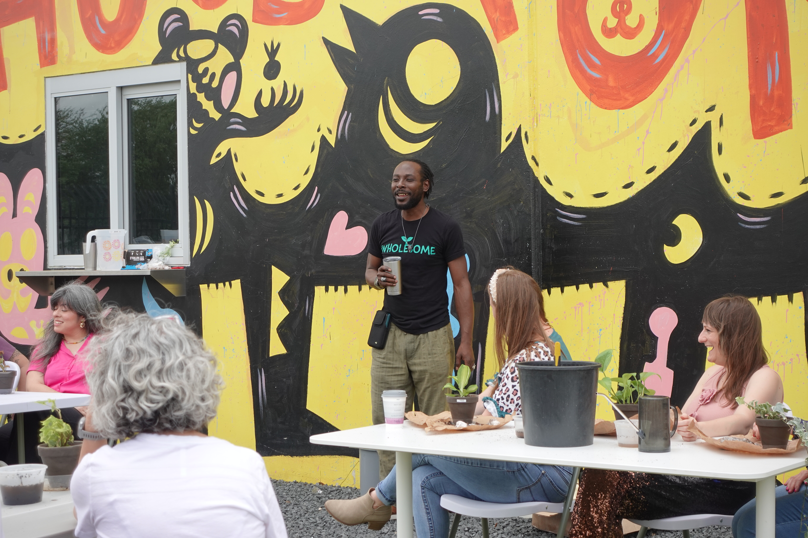

"By cultivating our own plants, we acquired essential gardening skills, and through this process we were reminded that we cannot force anything to grow."
Maegan Morrow, Creative Arts Therapist, Center for Performing Arts Medicine at Houston MethodistHands in the soil
Hands-on plant workshops for teams, led by Garden Marcus
Marcus leads your group through a hands-on plant experience. Everyone leaves with something living, and a lesson that grows with it.

Length
60–90 minutes
Materials
Kits available
Everyone leaves with
A living plant
Group size
10-50
Team building that grows after the event
Plant workshops create an immediate shared experience: people get their hands in soil, slow down, and reconnect. Marcus guides the room with practical instruction and storytelling that makes each step meaningful and accessible.
Participants leave with a plant they cared for themselves and a simple framework they can apply to growth at work and at home.
If you are an event planner looking for team building activity, corporate wellness event, or a client appreciation event, Marcus is the guy for you. He will help your team reach your goals.
What participants say
"Marcus's personal story and philosophy of personal growth for the strengthening of our community resonate deeply for our times."
Azura Hassan, participant, "Nurture Your Garden, Nurture Yourself" workshopPlant workshop FAQ
Do we need to supply plants or soil?
No. Materials kits can be provided, including plants, soil, and containers. We can also coordinate with your venue if you already have supplies.
Does anyone need gardening experience?
No prior gardening experience is required. Sessions are beginner-friendly and designed to welcome mixed experience levels.
Can it be added to a keynote?
Yes. Every signature topic can be paired with a plant experience for a full-day event flow.